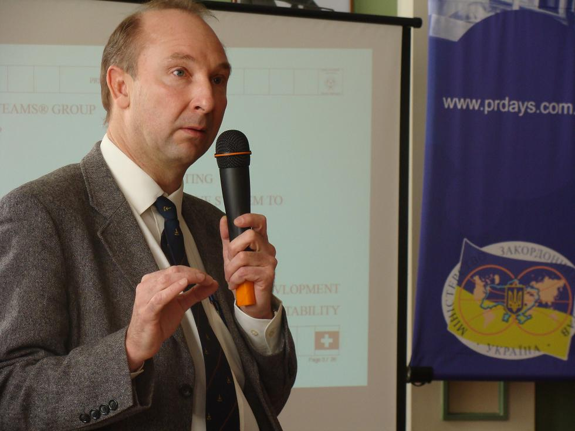
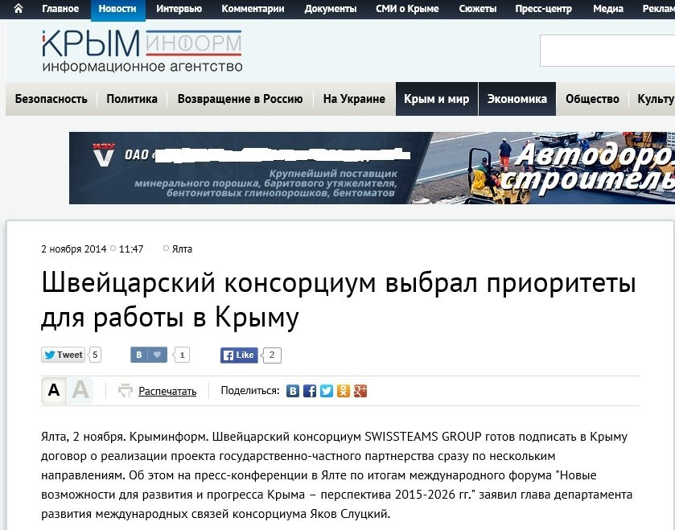
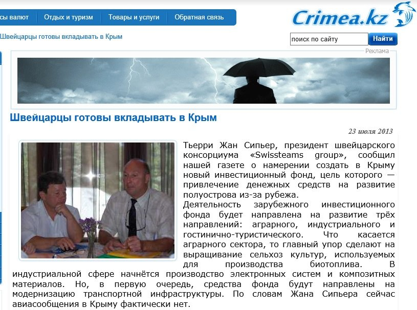

Загадочный швейцарский консорциум Swissteams Group
Информационное агентство «Крыминформ» 2 ноября сообщило о появившейся возможности подписать договор между крымскими властями и швейцарским консорциумом Swissteams Group.Эта организация, как сообщается, готова инвестировать в развитие крымской инфраструктуры.«Швейцарские инвесторы проявили заинтересованность к строительству магистрали прибрежного высокоскоростного поезда Севастополь – Ялта – Судак, модернизации Института биологии южных морей, а также реконструкции стадионов в Севастополе и Ялте», — сообщает сайт со ссылкой на главу департамента развития международных связей консорциума Якова Слуцкого.
Швейцарский консорциум Swissteams Group кажется более чем загадочным.Информацию о нем нельзя найти в поисковиках ни на русском, ни на английском, ни на французском языке.Интересно, что при попытках найти любую информацию об этом консорциуме появляются лишь ссылки на новость о Крыме на русском языке.
Мы проверили список коммерческих организаций в Швейцарии — Swissteams Group там отсутствует.Более того, как выяснили журналисты КрымИнформ, консорциума Swissteams Group не существует также в британских и кипрских реестрах.
Отсутствуют и какие-либо фотографии участников переговоров с крымской встречи, в ходе которой были достигнуты договоренности об инвестициях.
В связи с этим многие СМИ уже объявили эту компанию фейковой.Но мы пока не можем сделать таких выводов.
Во-первых, информация о Swissteams Group уже не первый раз появляется в крымской прессе.К примеру, в прошлом году Крым посетил Тьерри Жан Сипьер, который назвал себя президентом швейцарского консорциума Swissteams group и пообещал инвестировать в инфраструктуру Крыма.
Во-вторых, господин Сипьер приезжал в Крым в мае прошлого года, а также принимал участие в мероприятии «Дни PR в Украине«, которое состоялось в октябре прошлого года в Киеве.В обоих случаях он представлялся как президент швейцарской финансово-инвестиционной компании Cofipag AG.Эта компания присутствует в швейцарских реестрах.На фотографиях самого Тьерри Жана Сипьера стоит копирайт — 1997-2008 Copyrights SWISSTEAMSGROUP.
Таким образом, можно предположить, что Swissteams Group — это условное названия для объединения реально существующих швейцарских компаний.
Напомним, что совет ЕС принял дополнительные ограничительные меры в отношении Крыма и Севастополя в сфере инвестиций.Были запрещены новые инвестиции в проекты в области транспорта, инфраструктуры, телекоммуникаций, энергетики, а также в сфере добычи нефти, газа и минеральных ресурсов.
Posted On: 2014-11-06T21:00:00



Content Date: 2014-11-06
Download Date: 2021-07-16
Document ID: L0C04FHYT